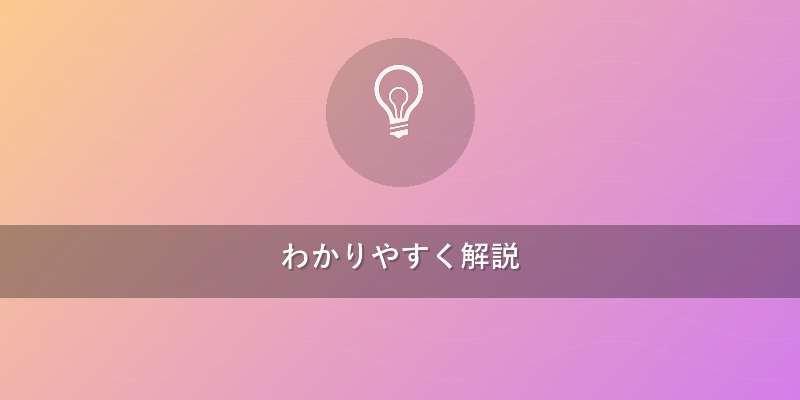
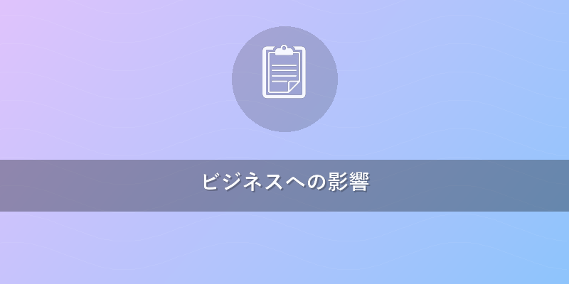
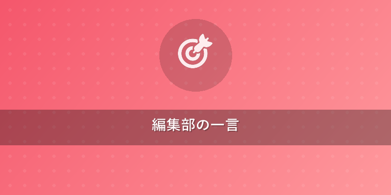

量子AIがビジネスを変革！最新動向とチャンス
ブログ名: Quantum Brief カテゴリ: 量子×ビジネス応用
3行でわかるポイント
- 量子AIは、量子コンピューターの力でAIを飛躍的に進化させる次世代技術です。
- 複雑な最適化やデータ解析で従来のAIの限界を突破し、新たなビジネス価値を創造します。
- 金融、製薬、物流など幅広い分野でビジネスモデルを根底から変える可能性を秘めています。

わかりやすく解説
忙しいビジネスマンの皆さん、こんにちは！ 最先端の量子技術を分かりやすくお届けするQuantum Brief編集部です。
今日のテーマは「量子AI」。SF映画に出てきそうな響きですが、この技術が私たちのビジネスを大きく変えようとしています。一体どんな技術で、なぜ今注目されているのでしょうか？
量子AIとは？：AIと量子の融合
量子AIとは、一言で言えば「量子コンピューターの計算能力をAIの学習や推論に活用する技術」です。（量子コンピューター：従来のコンピューターが0か1で情報を処理するのに対し、0と1が同時に存在する状態（「重ね合わせ」）や、互いに影響しあう関係（「もつれ」）を利用して、超高速に計算できる夢の次世代コンピューターです。{{internal_link:量子コンピューターの基礎知識はこちら}}）
私たちが普段使っているAI、例えばスマートフォンの音声アシスタントやECサイトのおすすめ機能などは、大量のデータからパターンを見つけ出すのが得意です。しかし、超複雑な組み合わせの最適化問題や、膨大な選択肢の中から最適な答えを見つける問題になると、いくら高性能な従来のコンピューターでも計算に途方もない時間がかかってしまいます。
ここに、量子コンピューターが突破口を開きます。
- 重ね合わせ: 量子コンピューターの最小単位である「量子ビット（キュービット）」は、0と1の両方の状態を同時に持つことができます。（量子ビット：従来のコンピューターの「ビット」が0か1か一方の状態しか取れないのに対し、量子コンピューターでは0と1の両方の状態を同時に表現できる最小単位のこと。）これにより、膨大な選択肢を「一度に」探索できるようになります。まるで、迷路の全ての道を同時に進んで、一瞬でゴールを見つけるようなものです。
- 量子もつれ: 複数の量子ビットが互いに強く影響しあう状態です。（量子もつれ：離れた場所にあるサイコロが、片方を振るともう片方も同じ目になるような、不思議な量子的な関係性です。）この現象を利用することで、情報処理を桁違いに効率化できます。
これらの特性により、量子コンピューターは従来のコンピューターでは現実的に不可能な計算を可能にする「量子優位性（きゅうりゅうゆういせい）」が期待されています。（量子優位性：量子コンピューターが、特定の計算において、世界最速の古典コンピューターよりも圧倒的に速く、実用的な時間で計算できる能力のこと。）
最新の研究動向と具体的なデータ
量子AIの研究は、世界中で急速に進んでいます。
- 量子機械学習 (QML): 量子コンピューターを使って、より大規模なデータセットから高速にパターンを学習したり、複雑なデータ構造を解析したりする研究です。例えば、金融市場の予測精度を格段に向上させたり、新薬開発における分子設計のシミュレーションを飛躍的に加速させたりする応用が期待されています。
- 量子最適化: これは、複数の変数が絡み合う非常に複雑な問題に対して、短時間で最適な答えを導き出す技術です。例えば、物流ルートの最適化、工場スケジュールの効率化、電力網の安定化といった分野で、従来のAIでは実現できなかったレベルの効率化が可能になります。
- 量子ニューラルネットワーク: 人間の脳の神経細胞の仕組みを模倣したAIの学習モデル（「ニューラルネットワーク」）を量子コンピューター上で再現しようとする研究です。（ニューラルネットワーク：人間の脳の神経細胞のつながりを模倣して作られた、AIが学習・判断するための仕組みのこと。）より高度な学習能力と推論速度の向上を目指しています。
具体的な動きとしては、IBMが2022年に433量子ビットのプロセッサ「Osprey」を発表するなど、量子ビット数の増加が加速しています。Google、Microsoft、Amazonなども量子コンピューター開発競争に巨額の投資をしており、まさに技術革新の真っ只中です。
市場調査会社のGrand View Researchによると、世界の量子コンピューティング市場は2020年に約3億ドルでしたが、2030年には約65億ドルに達すると予測されており、年率40%を超える成長が見込まれています。この成長の多くは、量子AIの応用が牽引すると考えられています。
課題と今後の展望
現在の量子コンピューターはまだ開発途上にあります。ノイズ（雑音）に弱く、エラー（計算ミス）が起きやすいという課題があります。（ノイズ：量子コンピューターの計算を妨げる、外部からの余計な信号や影響のこと。エラー：ノイズなどによって計算結果が間違ってしまうこと。）これらの問題を解決し、より安定した大型マシンを開発することが今後の鍵となります。しかし、エラー訂正技術や新しいアルゴリズムの研究も進んでおり、数年先には実用的な量子AIが私たちの目の前に現れるかもしれません。

ビジネスへの影響
量子AIは、ビジネスの様々な領域に革新をもたらす可能性を秘めています。これは単なる効率化ツールではなく、既存のビジネスモデルを根底から変え、全く新しいサービスや製品を生み出す「ゲームチェンジャー」となり得ます。
- 金融分野: 高頻度取引（HFT）のアルゴリズム最適化、複雑なポートフォリオのリスク管理、不正取引のリアルタイム検知などで、従来のAIでは不可能だった高速かつ高精度な分析が可能になります。（高頻度取引：コンピューターを使って超高速に株や為替などの売買を繰り返す取引のこと。）例えば、数マイクロ秒単位での市場予測精度向上により、数%の利益率改善が企業全体の収益に大きく寄与するでしょう。
- 製薬・化学分野: 新薬候補の分子構造解析やスクリーニング（候補をふるいにかけること）、新素材の特性シミュレーションなどを劇的に高速化します。これにより、研究開発の期間を数年から数ヶ月に短縮し、開発コストを大幅に削減できる可能性があります。年間数千億円規模の研究開発費を持つ企業にとっては、計り知れないインパクトです。
- 製造・物流分野: サプライチェーン（製品が消費者の手に届くまでの全ての流れ）全体の最適化、生産スケジューリングの効率化、配送ルートの最適化などで、膨大な組み合わせの中から最適な解を瞬時に見つけ出します。（サプライチェーン：製品の原材料調達から製造、物流、販売、消費者に届くまでの全ての一連の流れのこと。）例えば、大規模な物流網を持つ企業が量子AIを導入することで、年間数%の輸送コスト削減、つまり数十億円規模のコストメリットを享受できるかもしれません。
- AI開発・データ分析: より複雑で大規模なAIモデルの学習を加速させ、AIの推論速度を向上させることで、自動運転、画像認識、自然言語処理といった既存のAIアプリケーションの性能を飛躍的に高めます。{{internal_link:AIの最新ビジネス応用事例}}
今から準備すべきこと
量子AIはまだ黎明期ですが、この技術の導入を早期に検討し、パイロットプロジェクト（試験的な取り組み）を開始した企業が、将来的に大きな「先行者利益」を得る可能性が高いです。競合他社に先駆けて、新しいビジネスモデルやサービスを構築する絶好のチャンスと言えるでしょう。
具体的なアクションとしては、まず自社のビジネス課題と量子AIの可能性を照らし合わせること。専門家や研究機関との連携を模索し、小規模なPoC（概念実証）からスタートしてみてはいかがでしょうか。{{internal_link:量子技術への投資動向}}

編集部の一言
量子AIは、まるで未来からやってきた魔法のような技術ですね！私たちの想像力を遥かに超える可能性を秘めています。ビジネスの最前線で活躍する皆さんにとって、この新たな波をどう乗りこなすかが、次の成長のカギとなるでしょう。今のうちからアンテナを張って、未来のビジネスチャンスを掴みましょう！